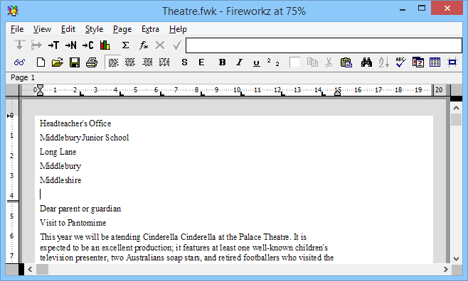

This chapter will describe some of the fundamental features of Fireworkz on Windows.
It includes sections on:
Fireworkz on Windows uses the left button of the mouse (or its equivalent on any trackpad any alternative pointing device which you use). When you are called to click on an object, this means click and release the left button of the mouse.
For some special operations you will need to press the Ctrl key and the left mouse button.
When Fireworkz was designed in the early 1990s, the right mouse button was reserved for use by OLE, and has since been used for context menus. Fireworkz does not use this mouse button.
When you use Fireworkz to create a new document or load an existing document, the document will appear in a window on your desktop. For example: 
The central area in white represents the paper onto which you can enter your document. Anything inside this area will appear when your document is printed, anything outside this area will not appear.
The other areas of the window are explained briefly below.
The title bar of your document window includes some helpful information about your document:
Just below each Fireworkz document's window title bar, you will find the Fireworkz menu bar.
Clicking on a word in the Fireworkz menu, for example, File, will bring up the corresponding menu .
Several menus contain sub-menus; these are indicated by the right-pointing arrow alongside the option name. These sub-menus may be accessed by sliding the mouse pointer off the right-hand side of the menu past the right-pointing arrow; this will cause the sub-menu to be displayed.
Other options may be chosen from a menu by pointing at them and then clicking on them.
Several options will execute commands that bring up dialogue boxes for user input; these are indicated with an ellipsis (…) alongside the option name, for example, the option on the menu. The ellipsis on such menu options is omitted in this document for brevity.
Some frequently used menu options have keyboard shortcuts which are shown alongside the option name in each menu.
From time to time, certain menu options may be greyed out (disabled) to indicate that they cannot be used at the moment. For example, you cannot use the option to sort an area of your document unless you have an area selected. If you do not have an area selected, the option will be greyed out. As soon as you select an area, the option will no longer be greyed out.
The toolbar along the top (below the menu bar) allows you to access all the most commonly used commands quickly and easily by a single click on a tool button.
If you point the mouse pointer over toolbar buttons, a ToolTip message appears explaining the function of the button. For example, when pointing at the button:
From time to time, certain tool buttons may be greyed out to indicate that they cannot be used at the moment. For example, you cannot use the tool button to remove an area of your document uness you have an area selected. Therefore, if you do not have an area selected, the tool button will be greyed out. As soon as you select an area, the tool button will become available for use.
Certain tool buttons may appear to be 'pressed in' or 'pushed out' to indicate whether or not particular options are currently selected. For example, if the tool button appears 'pressed in' (i.e. bold is currently selected) then any text which you type will appear in a bold font. If the tool button appears 'pushed out' (i.e. bold is not currently selected) then text will appear in normal font weight.
If you click the tool button, it will alternate between these two states.
The status line appears below the toolbar. It provides help and information about the work in progress. For example:
Whilst you are familiarising yourself with how Fireworkz works, you should make use of the help provided by the status line.
There are two rulers that you can choose to display:
The horizontal ruler can be used to alter the:
The vertical ruler can be used to alter the: